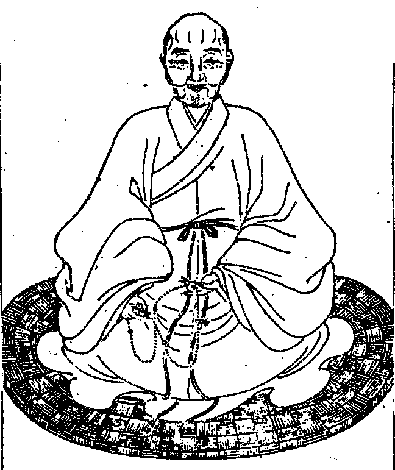

嘉興大藏經 第33冊
No.B277 雲棲法彙（選錄）(第12卷-第25卷) (14卷)
【明 袾宏著（原本多缺 依金陵本補印 並補後增讚序等文 凡補印者 於該條目上作△以志之）】
第 25 卷
雲棲大師塔銘目錄

其容寂。其心密。無內外。不出入。百千三昧。眼裏空華。一切行門。空中鳥跡。不信分身萬像中。癡人祗向毫端視。咦。
觀如敬刊
古杭雲棲蓮池大師塔銘
慾海橫流。三毒熾然。孰能遏狂瀾以清烈燄。自非應身大士。又何能醒顛暝而朗長夜。時當後五百年。尤難其人。是於雲棲大師深有感焉。師諱袾宏。字佛慧。別號蓮池。志所歸也。俗姓沈氏。古杭仁和人。世為名族。父德鑑。號明齋先生。母周氏。師生而穎異。世味澹如。年十七。補邑庠。試屢冠諸生。以學行重一時。於科第猶掇之也。顧師志在出世。每書生死事大四字於案頭。時從遊者日進。即講藝。必折歸佛理。業已棲心淨土矣。家戒殺生。祭必素。居常太息曰。人命過隙耳。浮生幾何。吾三十不售。定超然長往矣。何終身事齷齪哉。前婦張氏生一子。殤。頃婦亦亡。即不欲娶。母強之。議婚湯氏。湯貧。女齋蔬。比有富者欲得師為佳婿。陰間之。師竟納湯。然意不欲成夫婦禮。年二十七。父喪。三十一。母喪。因涕泣曰。親恩罔極。正吾報答時也。至是而長往之志決矣。嘉靖乙丑除日。師命湯點茶。捧至案。盞裂。師笑曰。因緣無不散之理。明年丙寅。訣湯曰。恩愛不常。生死莫代。吾往矣。汝自為計。湯亦洒然曰。君先往。吾徐行耳。師乃作一筆勾詞。竟投西山無門洞性天理和尚祝髮。乞昭慶寺無塵玉律師就壇受具。居頃。即單瓢隻杖遊諸方。遍參知識。北遊五臺。感文殊放光。至伏牛。隨眾煉魔。入京師。參遍融笑巖二大老。皆有開發。過東昌。忽有悟。作偈曰。二十年前事可疑。三千里外遇何奇。焚香擲戟渾如夢。魔佛空爭是與非。師以母服未闋。乃懷木主以遊。每食必供。居必奉。其哀慕如此。至金陵瓦官寺。病幾絕。時即欲以就茶毗者。師微曰。吾一息尚存耳。乃寢病間歸。越中多禪期。師與會者五。終不知鄰單姓字。隆慶辛未。師乞食梵村。見雲棲山水幽寂。遂有終焉之志。山故伏虎禪師剎也。楊國柱陳如玉等為結茅三楹以棲之。師弔影寒巖。曾絕糧七日。倚壁危坐而已。村多虎。環山四十里。歲傷不下數十人。居民最苦之。師發悲懇。為諷經施食。虎患遂以寧。歲亢旱。村民乞師禱雨。師笑曰。吾但知念佛。無他術也。眾堅請。師不得已。出。乃擊木魚。循田念佛。時雨隨注。如足所及。民異之。因相與纍纍然肩材木荷鋤钁。競發其地。得碣礎而指之曰。此雲棲寺故物也。師福吾村。吾願鼎新之。以永吾福。不日成蘭若。然外無崇門。中無大殿。惟禪堂安僧。法堂奉經像。餘取蔽風雨耳。自此道大振。海內衲子歸心。遂成叢林。師悲末法教網滅裂。禪道不明。眾生業深垢重。以醍醐而貯穢器。吾所懼也。且佛設三學以化群生。戒為基本。基不立。定慧何依。思行利導。必固本根。第 國制。南北戒壇。久禁不行。予即願振頹綱。亦何敢違憲令。因令眾半月半月誦梵網戒經。及比丘諸戒品。繇是遠近皆歸。師以精嚴律制為第一行。著沙彌要略。具戒便蒙梵網經疏發隱。以發明之。初師發足操方。從參究念佛得力。至是遂開淨土一門。普攝三根。極力主張。乃著彌陀疏鈔十萬餘言。融會事理。指歸唯心。又憶昔見高峰語錄。謂自來參究此事。最極精銳。無逾此師之純鋼鑄就者。向懷之行腳。唯時師意併匡山永明而一之。更錄古德機緣中喫緊語編之。曰禪關策進。併刻之。以示參究之訣。蓋顯禪淨雙修。不出一心。是知師之化權微矣。梵村舊有朱橋。屢被潮汐衝塌。行者病涉。太守余公良樞請師倡造。師云。欲我為者。無論貧富貴賤。人施銀八分而止。獨用八者。意取坤土以制水也。微矣。或言工大施微。恐難竣事。師云。心力多則功自不朽。不日累千金。鳩工築基。每下一樁。持咒百遍。潮汐不至者數日。橋竟成。昔錢越王以萬弩射之不迴。師以一心力當之。何術哉。萬歷戊子。歲大疫。日斃千人。余公復請師就靈芝寺禳之。疫遂止。淨慈僧性蓮。請師講圓覺經。聽者日數萬指。如屏百匝。因贖寺前萬工池。後師八十誕辰。又增拓之。合城中上方長壽兩池皆為放生設。侍郎王公宗沐問。夜來老鼠唧唧。說盡一部華嚴經。師云。貓兒突出時如何。王無語。師自代云。走卻法師。留下講案。又書頌曰。老鼠唧唧。華嚴歷歷。奇哉王侍郎。卻被畜生惑。貓兒突出畫堂前。床頭說法無消息。無消息。大方廣佛華嚴經。世主妙嚴品第一。師道價日增。十方衲子如歸。師一以慈接之。弟子日集居日隘。師意不莊嚴屋宇。聊取安適支閣而已。其設清規益嚴肅。眾有通堂。若精進。若老病。若十方。各別有堂。百執事各有寮。一一具鎖鑰。啟閉以時。各有警策語。依期宣說。夜有巡警。擊板念佛。聲傳山谷。即倦者。眠不安。寢不夢。布薩羯磨。舉功過。行賞罰。以進退人。凜若冰霜。威如斧鉞。即佛住祇桓。尚有六群擾眾。此中無一敢諍而故犯者。雖非盡百丈規繩。而適時捄弊。古今叢林。未有如今日之清肅者。具如僧規約。及諸警語。赫如也。極意戒殺生。崇放生。著文久行於世。海內多尊奉之。城內外放生池。歲費計百餘金。山中設放生所。其捄贖飛走諸生物充牣於中。眾僧減口以養之。歲除芻。約費粟二百石。亦有警策。守者依期往宣白。即羽族善鳴噪者。聞木魚聲。悉寂然而聽。宣罷。乃鼓翅喧鳴。非佛性哉。噫。佛說孝名為戒。儒呵有養無敬。師於物養而敬。且有禮者也。非達孝哉。師道風日播。海內賢豪。無論朝野。靡不歸心。聞名而感化者。若大司馬宋公應昌。太宰陸公光祖。宮諭張公元忭。大司成馮公夢禎。陶公望齡。并一時諸縉紳先生。次第及門問道者以百計。皆扣關擊節。徵究大事。精難義。靡不心折。盡入陶鑄。至監司守相。下車就語。侃侃略無少屈。諸賢豪侯參者無加禮。不設饌。皆甘糲飯。臥敗蓆。任蜥緣蚊嘬無改容。皆忘形屈勢。至則空其所有。非精誠感物。何能至是哉。侍御左公宗郢。問念佛得悟否。師曰。返聞聞自性。性成無上道。又何疑返念念自性耶。仁和令樊公良樞。問心雜亂。如何得靜。師曰。置之一處。無事不辦。坐中一士曰。專格一物。是置之一處辦得何事。師曰。論格物。只當依朱子豁然貫通去。何事不辦得。或問師何不貴前知。師云。譬如兩人觀琵琶記。一人不曾經見。一人曾見而預道之。畢竟同觀終場。能增減一齣否。 今上慈聖皇太后崇重三寶。域內名僧靡不延之。一日偶見師放生文。甚嘉歎。遣內侍齎紫袈裟齋資往供。問法要。師拜受。以偈答之。載別錄。師極意悲幽冥苦趣。自習燄口。時親設放。嘗有見師座上現如來相者。蓋觀力然也。師天性朴實簡淡。無緣飾。虛懷應物。貌溫粹。弱不勝衣。而聲若洪鍾。胸無崖岸。而守若嚴城。禦若堅兵。善藏其用。文理密察。經濟洪纖不遺鍼芥。即畫叢林日用。量施利。酌厚薄。粒米莖菜無虛費。覈因果。明罪福。絲無絓漏。定程規。秋毫不忽。養老病。公眾僧。不滲滴水。自有叢林以來。五十年中。未嘗妄用一錢。居常數千指。不設化主。聽其自至。稍有盈餘。輒散施諸山。庫無儲畜。凡設齋外。別有果資以供師者。咸納之。隨手任施衣藥。捄貧病。略無虛日。偶簡私記。近七載中。實用五千餘金。不屬常住。則前此歲歲可知已。師生平惜福。嘗著三十二條自警。垂老自浣濯。出溺器亦不勞侍者。終身衣布素。一麻布幃。乃丁母艱時物。今尚存。他可知已。總師之操履。以平等大悲攝化一時。非佛言不言。非佛行不行。非佛事不作。佛囑末世護持正法者依四安樂行。師實以之。歷觀從上諸祖。單提正令。未必盡修萬行。若夫即萬行以彰一心。即塵勞而見佛性者。古今除永明惟師一人而已。先儒稱寂音為僧中班馬。予則謂師為法門之周孔也。以荷法即任道也。惟師之才足以經世。悟足以傳心。教足以契機。戒足以護法。操足以勵世。規足以捄弊。至若慈能與樂。悲能拔苦。廣運六度。何莫而非妙行耶。出世始終。無一可議者。可謂法門得佛之全體大用者也。悲茲末法。非師曷足以挽頹風。迴狂瀾於既倒乎。非夫應身大士。朗末法之重昏者。何能至此哉。微密細行。不能殫述。別傳詳之。茲略掇其行事之梗概。臨終時。預於半月前入城別諸弟子。首及宋守一等。遍及故舊。但曰吾將他往矣。人皆莫測。還山。連下堂具茶湯設供。與眾話別云。此處吾不住。將他往矣。眾罔知。常規中元濟孤設盂蘭盆。各薦先宗。師曰。今歲我不與會矣。有簿記。師密題之曰。雲棲寺直院僧代為堂上蓮池和尚追薦沈氏宗親云。過後方見。始知其別語也。七月朔。晚入堂坐。囑大眾曰。我言眾不聽。我如風中燭。燈盡油乾矣。只待一撞一跌。纔信我也。明日要遠行。眾留之。師作三可惜十可歎以警眾。時松江居士徐琳等五人在寺。令侍者送遺囑五本。次夜入丈室。示微疾。瞑目無語。眾省覺。報城中諸弟子至。圍繞。師復開目云。大眾。老實念佛。毋捏怪。毋壞我規矩。眾問誰可主叢林。師曰。解行雙全者。又問目前。師曰。姑依戒次。言訖。面西念佛。端然而逝。是萬歷四十三年七月初四日午時也。師生於嘉靖乙未。世壽八十有一。僧臘五十。師自卜寺左嶺下。遂全身塔於此。其先偶湯氏。亦後師祝髮。建孝義庵。為女叢林主。先一載而化。亦塔於寺外之右山。師得度弟子廣孝等為最初上首。其及門授戒得度者不下數千計。而在家無與焉。縉紳士君子及門者亦以千計。而私淑者無與焉。其所著述。除經疏。餘雜錄如竹窗三筆等二十餘種行於世。率皆警發語。師素誡弟子貴真修。勿顯異。故多靈異不具載。嗚呼。我聞世尊深念末法眾生難度。恐斷慧命。靈山會上求護正法者。即親蒙授記亦不敢入。唯地涌之眾力任之。且曰。我等末世持經。當具大忍力。大精進力。即有現身此中。亦不自言其本。泄佛密因。但臨終陰有以示之耳。觀師之行事。潛神密用。安忍精進之力。豈非地涌之一乎。抑自淨土而來乎。不然。從凡夫地。求自利尚不足。安能廣行利他護持正法。始終無缺者乎。是予有感而來者。拾師之行事以詔來世。其他具諸別傳。乃為之銘曰。
三毒燄熾 五熱周章 孰能藥石 頓使清涼
慾海橫流 波浪滔天 誰能濟渡 駕大法船
惟我大師 實乘願力 放身其中 隨宜調適
蚤斷愛根 如獅脫索 纔出塵勞 便露頭角
開淨土門 張法界網 撈漉三根 其赴如響
以金剛鎞 刮瞖眼膜 根本不生 枝葉自落
大冶紅爐 慈悲忍力 入此陶鎔 癡狂頓息
毛孔光明 通身手眼 從無用中 法輪常轉
若非付囑 定是地涌 豈屬尋常 具大勇猛
師從空來 亦從空去 雖善藏身 欲隱彌露
鐘鼓交參 雲霞綺互 塔影高標 法身常住
前海印沙門德清和南謹撰
雲棲大師。無量光如來菩提記莂之上首也。同體大悲。去樂邦。就忍土。視眾生如一子。出之火宅。而載以金地白牛。漩澓圓通。行無轍跡。人知其往於無往。不知其來於無來也。夫往於無往。來於無來。又惡在不可述於無述耶。師法諱袾宏。字曰佛慧。自稱蓮池比丘。嘉靖乙未。正月二十二日。現身杭隱君子沈德鑑家。而假智母周氏腹以誕。十七為邑弟子員。慧業第一。踰三十而袈裟著身。於是南五臺性天理和尚有菩薩戒弟子矣。瞻奇五味。苦行六年。反錫一丘。枯禪三載。而雲棲之剎遂為震旦不二法門。坐道場四十餘年。法化遍周。而以萬歷乙卯七月四日策勳於清泰聖王之側。數齡九九。僧臘與大衍符。此則師於調服眾生三昧善入住出之大凡也。仲尼無學。以教故學。未能者四。無能者三。自好自求。自憤自樂。庸詎知不厭之非不倦耶。師示悟中迷。勤求無上。述古德利行因緣。助發禪喜。命曰禪關策進。抱以行寢。而消歸念佛一心。坐鍊伏牛。愛樂勤勇。而不釋然。入辨融笑巖之室。猶之不釋然。僑寓東昌。而悟中之迷若掃。乃有頌云。二十年前事可疑。三千里外遇何奇。焚香擲戟渾如夢。魔佛空爭是與非。乘悟併消。歸無所得。猶之不釋然也。寓越中禪期者五。了不知鄰單諱字。棲真之塢。懸釜而炊。鳴泉夜和。乃至絕糧七日。晏如也。擔板禪頭。方且以為忍鎧。以為進幢。不知冷地婆心與麼徹困在。方師之為譽髦首也。足躡玉堂。手探金穴。若掇之矣。而几案間輒以生死迅速自危。綸綍鼎茵。矢諸三十。不舍硜硜。於是乎不脫父衰而定省於揣摩。斧鬣既封。乃不脫母衰而饘粥於缽鐼。雖匕鬯未立。扊扅孔良。師固曰。博堅以脆。是孝慈之善物而已矣。若乃行腳而虞主俱。飲食必祭。盂蘭水陸。則沈氏之鬼別為福先。子舍祿養心長。色養日短。稱引自悼。情見乎辭。若祖。若考。若妣。若嬪。若善知識婦。世濟之詒。內助之美。同心之和。皆以文字載而行之。方外之狐。域中之馬。爭於不朽。未知孰賢。而終其身不借重人資。不見妄人過。不於佛法而生厭足。則大慈父之智導。與慈父之義方。無聲而聽。一也。緇門崇行。著之於篇。永言矜式。必忠孝之為前茅。而申警緇流。弗若於憲章者。至不共住。詞人韻語。功令休文。而弁髦方策。宋。劉韐。李若水。兩忠烈祠。濫以淫毀。稽古立義之士。未或明其不然。三歎而筆之書。以俟來者。 國有大戒。不難輟講下座。信當路革言。乞士羯磨。以限制故。望昭慶地涌之壇而不敢即。五篇三聚。授之像前。而三師與七證等。於乎。襲堂構而懷雲仍之憂。棄鬚髮而蔑劬勞之德。念榮肥而怠簡書之畏。私妻子而弛赫濯之嚴。聞師之風。亦可以少愧矣。雲棲者。一名棲真。宋初伏虎志逢禪師剎也。圮於巨浸。遺礎獨存。百年間無仔肩興復者。師賞其幽。而總戎楊國柱門人陳如玉等。奉以把茆練若。千峰圍繞。萬境空間。有終焉之志。而向之所伏乃更咥人。一繇旬中歲至二十餘倀。師化暴以慈。神咒加持。法食兼濟。而於菟之牙若焚。恆暘請禱。佛音聲雲布自輔頰。雨師奔命。疾如神巫。鄉人曰。伏虎意生也。叔兮伯兮。唱予和女。五材備。百官至。居無何剎成。而師以骨人為千苾芻善知識。本厥子來。洎乎尸祝。六和之供。自西自東。自南自北。不鳩而集。匪夷所思。歲會香積之餘。頒之諸剎。普陀天台皆與焉。他諸福田。應量而雨。至不擇闡提白衣。一籍七年。數金以鎰。幾若武成革車之數。師若曰。此乃菩薩比丘所以畜生相也。當是時。法施如麈。財施如鹿。妙樓寶楯。慮無不取辦咄嗟而師方存乎去泰去奢。才使奉經像處徒眾而已。吳越薦紳數欲廣嚴其宇。而師數距之堅。曰。此於樹下居侈矣。檀波逆流。篋無長物。綺縠不加於身。精奇不登於器。珍異不實於盂。苦次一帷。沒身不棄。乃至耋老。猶不以衵服溺器勞人。咄哉寶所導師。儉不敢先乃爾。三無漏學。首曰毗尼。而雲棲布薩之嚴。直令漢官威儀。千秋復睹。智者菩薩戒疏巧發其隱。開遮輕重燦以彬彬。賞罰有章。進退維允。左袞右鉞。居然素王。迨今仁政具存。較若畫一。而如來波羅提木叉不為裨販之蟲喪其尊重。南山宣公以還未曾有也。玄德升聞。 孝定皇太后敦使而咨出要焉。北面稽首。報以伽陀。金作海會飯香。而紫尊以什襲。弗敢服也。 神祖御天。三藏之輪。震旦起涌幾遍。弗敢請也。邦之大人。彤弓墨綬。問道侃侃若也。遵道靡靡若也。取大金湯。德威惟畏。謹毋使我眾有疵。終不以豫之六三。舍頤之初九矣。而雕龍甲。繡虎角。五車八斗。合得摩詰吹篪惠休銜璧。而未嘗一搴郢上之旗。冷風小和。無之非池上之仙音。而林間之密諦也。於乎。方袍圓頂之倫。擷貝葉於枕中。掇蓮華於筆上。以幾遇巷而濟乘墉。高者建法幢。卑者章賂鼎。衣食好美以望其徒。聞師之風。亦可以少愧矣。永明謂禪者淨土之禪。淨土者禪之淨土。大師蓋雙照焉。楖栗頭邊。猛著精采而有東昌之悟。諦觀時節。無若三玄五位。浸假為孫叔衣冠而持名往生聖謨定保。故其出世為人。顯以九品為綱。密以單傳為釣。而彌陀小本疏鈔昭昭乎揭日月矣。其為書也。鉤三藏十二部之玄。以莊嚴六字心佛。作者如釀眾芳。都成一味。讀者如浴大海。已用百川。如來一代時教盡在是矣。安居之暇。時為學徒講諸經論。衝口而道。如水得風。自成組繡。而天台賢首交光互影於帝網之珠。雖挾天下之美以往。窅然自喪。住持軌則。刻漏以香宛同匡阜。巡單以板。小類伏牛。庶慎之思。不令而行。不戒而備。米鹽析。水乳調。老病寧。禪講輯緇素洽。神人和。淑慝分。會計當。檀施出入。察及秋毫脫也以貿燭金續銷膏火。而不善知眾之謫至矣。夫非起教微眇。使共住者遷善遠罪而不自知耶。以故萬指之聚闃其無人。六時之規蕭然無事。五乳老人歎其旋萬法歸一心即塵勞見佛性。以為永明後一人。而又以經濟妙嚴。比於法門周孔。知言哉。法身向上事。觸著磕著。偶露一班。而未嘗數數。王侍郎宗沐問。夜來老鼠唧唧。說盡一部華嚴經。師曰。貓兒突出時如何。自代云。走卻法師。留下講案。乃有頌曰。老鼠唧唧。華嚴歷歷。奇哉王侍郎。卻被畜生惑。貓兒突出畫堂前。床頭說法無消息。無消息。大方廣佛華嚴經。世主妙嚴品第一。如是作略。定從洞山寶鏡中來。而師甚不欲增上慢人。睨其影草。妄拈戲論。以為大譴大呵。周納言汝登。舉鳥窠為香山說止惡行善。為侍者吹布毛以諷。師曰。正說止行。布毛已滿地矣。左侍御宗郢問念佛得悟否。師曰。反聞聞自性。性成無上道。何獨於反念念自性而疑之。曹明府胤儒。謂師執淨土漚。棄華藏海。師報以書。大都謂華嚴無量法門。淨土處一。一入一切。一攝一切。方欲因漚觀海。奈何以海拒漚。曹不能難也。當知念佛一心。自是師尋常行坐處。而退藏於密。不得事相。不得理相。盡力舉似諸人。禪之淨土。則吾豈敢。淨土之禪。為他演說。如說修行。則可謂云爾已矣。師所彙往生之流。在家二輩。寥寥空谷足音。而雲棲孝義諸賢。以無同分顯證。姑取臨終正念分明而已。且夫天樂異香。普聞一切。良繇賴耶共相感應道交。殆未可為往生者必。使為往生者必。則臨終惡相。自訟猶希矧曰同分。而世之墮泥犁者寡矣。然則諸根已謝。壽暖尚連。遝然而迎。翛然而往。故是正念分明者報合境界。而以獨知之契。寧闕所疑。謹厚精嚴。不以自宗假借類此。於乎。受一非餘。得少為足。性相宗說。反脣而稽。無土之禪。掠虛承響。輒自謂休去歇去。聞師之風。亦可以少愧矣。師貌古神粹。雙眸爛爛。音若洪鐘。行平等慈。無輕重於懷抱。含醇飲和。而仰之者如高山。就之者如愛日。歸之者如流水。嘗講圓覺於淨慈寺。七眾圍繞。其數十千。香華載塗。至不可措趾。一時碩德名流。若嚴閣學訥。陸大宗伯樹聲。汪少司馬道昆。陸太宰光祖。宋大司馬應昌。張宮諭元忭。汪少司馬可受。董大宗伯其昌。王大司空舜鼎。黃祭酒輝。金中丞學曾。陳方伯善。黃學憲汝亨輩。皆刳心咨決。而海內稱十戒五戒弟子者無慮千萬。激揚心要。助轉法輪。則虞司勳淳熙。馮司成夢禎。陶祭酒望齡。王大行爾康。葛璽卿寅亮。翁大參汝進。洪太僕瞻祖。錢臬憲養庶。羅太守大冠。王郡丞在功。謝二守於教。宋胄子守一。王文學宇春。顧文學若群。及吾家司馬用先。皆棟之隆也。而盲兀小子賓。耳食於遍覆之舌。飛精頫囟印廣瀹名。寶手遙垂。金鎞時有。恨皮下無血耳。波光緣起。梯航而至。無論赤縣。乃有越流沙而展坐具。泣涕瞻依。若亡子之遘慈母者。將無西極化人。證明東方護法耶。其拔幽也。覺觀入微。助發密語。而炬口為甘露門。戒殺放生之篇情文雙妙。把卷者顙有泚焉。羽族毛群。去刀俎而園觀。芻粟歲率二百石。鼠馴階下。蝨處筒中。惠人之池。則上方故墟。長壽新宇。兼雲棲剎竿之外而三。法以為羅。食以為餌。木魚方吼。而翔者息喙。泳者仰沫矣。易曰。中孚豚魚吉。師之謂也。香光大冶。其將磅礡。十二類生以為法檀牛耳。而自視欿然。未嘗以師嚴道尊。慨納沙彌投五。老憊跏趺。猶合十而加顙於席。曰弗有寧也。於乎。義鷇禪雛。得一二有力人推輓。則橫肱傲睨而朝其眾。至不肯為他方尊宿暫折慢幢。聞師之風亦可以少愧矣。師於無量劫波成熟三摩缽提慈善根力。幻化三昧。能之而能不為。以緣合故。差可睹記。而師不自有也。北遊感文殊光瑞於五臺。泛濁河。呼拯溺者。而其人聞空中聲菩薩所急遄以往。俄而與汩俱出。余使君良樞以梵村石梁為屬。師請無貴賤。人輸八十錢。或少之。師曰。多得施貲。不如多得施心之完也。以身先之。樁一咒百。潮不至者累日。橋用速成。淨慈之席。主者欲因以繕阿蘭。師以意知。而不欲侵諾。為間曰得之矣。雪積道壞。遂有遐遺。會其出入之通。了無欠剩。疏鈔成為眾普說。典醯夜告乏絕。雞鳴有垂罌而叩者。問其夙夜。曰。家本貨醯。而道場神呵不時供爾。王太史衡未第謁師。邑侯致餼。將及門。風作。腥墮澗中。僅存蔬果。虞司勳以定中獨影預為雲棲備擬。詫為奇。師詆其魔解。而明年第春官。得師尺牘懸記書達為讀狀元策時。虞大駭服曰。夫子其以我為河伯矣。有裒疏鈔之文者。辭曰應好略機。無何。睛痛幾裂。詣師對首。為作懺摩。而瘥其一目。宋胄子布六鎰於上方。既成賈矣。而封識金復在笥中。偵之鬻者亦無所失。馳白師。而心念淨名右掌事。得師微笑而已。冬杪。侍行睹放生池冰。梅月如畫。戊子大疫。作水陸於鄰寺。而氛祲立消。湖濱之墅。殞石自空。橫甚。瑜伽法師受師戒以往。登壇陰風微作。施罷寂然。于文學廣慧。妻梁廣慈。病祟。夢聖僧降雲中。群鬼逃匿。父曰。其雲棲乎。齋沐奉迎。貌如所夢。病良已。楊廣文春芳為鬼所著。祛之萬方。最後將走雲棲。鬼乃大窘。未至數里而遁。靖安令楊萬春。禮瑜伽高座。而忽睹彌陀金面。諦觀乃復得師相。始與儕輩駭歎投誠。他諸神奇不具述。而師示處學地。聲鍵色扃。無敢譁眾。今茲捃拾。正惟不作聖解而寓諸庸。尚行夫子之志云爾。於乎。斗筲夢得善境。猶喋喋向人。借曰逆知。借曰轉物。無乃鼻孔高至梵天。聞師之風。亦可以少愧矣。君子曰。德至矣哉。勇於棄蓋以醒大愚。廉於處賢。以砭小智。引之以慚愧。滿之以步趨。不思議熏。時至而變藥樹之雨。芭蕉之雷。妙合以滋。不得其朕。即事即理。即土即禪。即九品。即一乘。即蓮邦。即華藏。即剎那。即僧祇。惟一妙心。圓融泯絕。而嗜學之為善誘深遠矣。將入滅。作十可歎。三可惜。為最後鞭囑累宰官。惟舊章愆忘是懲是問。白月別會城弟子。黑月別共住弟子。皆言他往。且曰吾不與佛歡喜之供矣。報輓以頷。布薩如故。朔旦。命覈庫籍。班囑語。夜分示疾。而閉目杜口矣。大眾哀請。曰。老實念佛。莫換題目。堂頭替人。解行雙揀。無則姑循戒次。直院可也。詰朝卓午。掖坐面西。目開尋閉。燦若青蓮華葉。而香氣在洪太僕若諸侍者鼻端。惟聞佛聲。泊然而逝。面作黃金色。鼻垂雙玉。暖氣上衝於頂者久之。搜篋。得師手題之籍曰。直院代為堂頭薦沈氏祖禰也。訃聞。邦人大臨。如喪考妣。經七七日。奉全身塔於寺左五雲山麓。師所穆卜而預待也。先後圓寂五旬之中。白色夜光。自浮屠而東照。寺眾咸有睹焉。塗龕如肆。而居漆者前暫死。睹冥官所供木主。曰。西方大聖雲棲蓮池。南向。曰。虎跑三空師。西向。而空師夢金甲神以雲棲入滅督其後往。亟以眾來。禮甚肅。居數月。空師亦終。而他郡在家弟子某甲為鬼使所逮。及門。聞法雲菩薩降。降則師也。悲仰乍興。而師已為解免。即甦。走數百里。崩厥角於窣堵之下。為守者言甚具也。華嚴之祖。馬鳴逮圭峰而七。蓮宗之祖。匡山逮永明而七。師皆設像供焉。至是諸大弟子。因宋守一請。周爰諮謀。協於克一。定以師為蓮宗八祖云。遺教三函。一曰釋經。二曰輯古。三曰手著。凡三十餘種。而發隱疏鈔稱於論藏。故當狎主支那。繼室湯。操行殊邈。為菩薩比丘尼。法諱袾錦。住孝義庵。別有錄。出家得戒。眾累百千。甚多開士。揚師化者。廣心弘範於鵝湖。廣印開宗於真寂。而江陰廣寂。解郡相組。著苾芻衣。純一念佛。不繫徒眾。儻終及於絕塵之奔。博山大艤。雖親見壽昌。而化法化儀。觸目雲棲意旨。祖堂牓曰法燈。鷹俊鵬耆。代行司契。長養金毛。指殆不勝屈也。往小子賓。頌言大智行悲。遙供窣堵。緇檀耆宿。更使摸索暗中。為師留影於石。今之盲史。非昔之盲史也。數載次且。經旬卻掃。如淨滿月。指以盆池。如浩蕩春。繪以纖枝。小子無所逃罪。銘曰。
禪土圓修 乘戒俱急 是化導處 六度非功
萬行無作 是莊嚴處 迷悟雙銷 佛魔並遣
是晏坐處 蕊含五濁 華供十方 是經行處
武林芥納 雲塢毛吞 是藏身處 千燈遍照
多寶重開 是辦事處
雲棲本師行略
師系古杭仁和縣人。居會城之忠清里。姓沈氏。世為著族。父諱德鑑。號明齋先生。母孺人周氏。均有懿德。師生而穎異。十七歲為諸生。即嘖嘖有聲。德行文章俱極一時之選。然於名譽紛華澹如也。其所以未拋鉛槧者。養親志耳。故燕居屏几之間。輒書生死事大。無常迅速。或長坐不臥。夜以繼日。繇是同學少年業已知其非功名之士矣。二十七歲父喪。三十一歲母亦喪。越明年。葬事既竣。拜之墓所。殊不勝其風木之悲。因大慟。絕而再甦。復自慶云。親恩罔極。此正吾報答之時也。何以拘世之服闋為哉。意遂決。時繼室湯氏年甫十九。克全婦道。師弗顧也。瀕行囑曰。從來恩愛不常。設大限到時。伊誰可代。汝自為之計。吾從茲逝矣。湯亦洒然。絕無牽衣繾綣之態。對曰。唱隨之義。已熟籌之。君先往。吾徐行耳。師出家。從南五臺性天理和尚祝髮。受具戒。進菩薩戒。法諱上袾下宏。字佛慧。別號蓮池。志西方也。後湯果踐前約為比丘尼。事具本傳中。又先師一載而逝。亦大奇矣。師既得戒。遍訪名山。歷參知識。時辨融笑巖兩禪師宗風並振。師往詣入室。多所契合。六載崎嶇坎壈。行頭陀行。辛苦萬狀。履險如夷。隆慶五年。孤錫南還。愛雲棲山水幽勝。臨流趺坐。居然興在澗之思。竊自念云。吾於此得袈裟地。建草團[厂@劑](音瓢)。投老於中足矣。尚未知其為伏虎禪師之道場也。但見蓁莽蕭蕭。而斷碑遺礎。猶埋沒於蒼苔積蘚間。門人陳如玉等為薙草開林。結廬於上。延師居之。師於是面懸崖而成壁觀。聞鳴瀨以證圓通。伴雜麇麚。居同木石。將終身焉。不啻泌水衡門棲遲暫適而已。先是居民多虎患。早夜咆哮。一由旬內被其害者歲幾二十餘人。而犬豕牛羊難以更僕。師以慈力加被。為誦經持咒作瑜伽施食。而虎心皆善。自是不復傷人。歲大祲禱於山靈。雨暘時若。民大悅。以師之福庇一方也。相與踊躍建寺。遂成叢林。詳雲棲紀事。茲不復贅。師之名言法行。散見於群集者。多從筆授。而手澤存焉。其所未聞者。則同門耆宿皆能記之。茲亦不贅。惟是時當像季。風會愈漓。僧有飲酒食肉。馳獵於聲利之場。而恬然不以為異者。良繇不諳毗尼。甘自棄於佛海邊外也。所謂袈裟底下一失人身。萬劫難復。斯時也。即欲聞三聚四分之名終不可得。雖千佛興慈莫能救拔。可勝悼哉。師於是刪定律儀。先止。其婬殺盜妄之根本。發明梵網。次折其輕重開遮之隱微綱舉目張詳於指掌。秉降魔之慧劍。乘渡海之慈航。悲智弘深得未曾有。緣奉 國家明禁。雖杜攝授之門。然而行者學戒好修。元無拒理亦必三衣具足。然後付與應持戒本。令受之於佛像之前。師為證明而已。慮操持之易怠也。則半月誦戒。復千載久廢之權衡。恐瑕疵之或覆也。必弘誓當神。凜一念自欺之鈇鉞。兼之維那唱名。書記宣約。勸善懲惡。恆在於斯。縱華袞之榮市朝之辱不過是已。如是而有不畏神羞。仍庇其隱忒者。吾不信也。故人稱雲棲布薩之嚴。傑出諸方。上嘉千古。亶其然乎。是以學戒傳衣者。往返於空山窮谷之中。趾錯肩摩而無虛日者。有繇然矣。又以禪教二宗尚多流弊。禪門恆執理而廢事。講席多歧路以亡羊。甚至竊佛語為詞章。以機緣成戲論。如來慧命埒於懸絲。而法輪幾於覆轍矣。滔滔皆是。此非學者之過。抑亦唱導者之過也。師實愍焉。以為欲挽頹波。必須方便。因闡淨土之一門。用作狂瀾之砥柱。疏鈔彌陀一經。而性相雙融。事理無礙。俾賢知者不沈溺於偏空。而中下之流咸知向往。庶不至如弱喪而忘歸耳。於是約諸淨侶。純攝一心。單持名號。遠公以蓮開待漏。師以香消紀時。輪僧次以巡香。懸過牌而書罰。內外有約。東西有銘。晝夜提撕。以防昏散。果然數十年中。海內向風。其間得念佛三昧者不知其幾。而往生法眷亦時時有之。東林千載之後師一人而已。以故天下名公巨卿。長者居士。洎諸善信。無論百千萬人。雖傾心事師。不足為異。獨異夫異域緇流。有遠涉流沙。險。逾弱水。不計歲月之深。而惟願俄頃之一覯者。既而瞥見慈顏。不覺五體投地。如崩厥角。涕泗潸潸下矣。非至誠之動物也。而若是乎。嘗觀歷朝以來諸大老門庭。其法席之盛。雖赫奕當世。然或四事未敷。不免募諸檀越。本山主伴數百餘人。曾無化主。一聽其自來。尚有餘糧。以供十方賢聖。及諸淨室。乃至兩目。天台。補陀雙徑。移粟飯僧不計其數。且歲以為常。迄今未已。此震旦叢林前所未有者也。師謂菩薩以檀度為先。故每一受施。隨即散之。不擇遠近親疏。孤貧疾難。凡有所須。無不與者。歲出銀錢。恆以千計。雖種種種福田。而三輪空寂。未始有福田之想。獨放生一事猶覺惓惓。所謂智不得有無。而起大悲心。師之本性然也。道風遐播。從者如雲。至 兩宮尊信。遣中貴人贈紫衣一襲。齋金若干。問法要。師為開陳要道而拜登焉。使者出。金歸常住。衣奉高閣。終其身未敢一挂體也。師尚真實而黜虛浮。敦儉朴而薄華靡。崇戒德而勵精修。實踐躬行。則八十年來儼然一日。時當道自建牙而下。以逮藩臬諸公。多有奉師一言為蓍龜者。借曰興隆佛事。孰不遵之。而師之奉法惟謹。若將浼焉。但願以無事為福。巖扉常鎖。恍嚴夷夏之防。林屋深居。尚切淵冰之戒。即二時粥飯。每至食指千餘。凡聖龍蛇。最為繁雜。而一聞磬聲。闃如空谷。他可知矣。故隆萬以來。法門之以事波及者亦往往聞之。獨此地青山白雲。依然無恙。而流風餘韻。身後猶存。誠哉百鍊金剛。足為千古模範。不特一代典刑而已。師於六月廿九日。忽下堂設茶。普請別大眾。駕言他往。眾以師欲謝客。居長壽庵。習以為常。但漫為勸止。竟不知其所以也。三十日。復設齋呼首座。及眾居士。潤亦與焉。別如初。不及他語。向晚。仍下堂羯磨。將入觀。始還方丈。明發為孟秋朔。潤詣關問訊。師曰。正欲見汝。命之坐。令侍者設茶果。邀法師四人。及徐裕湖諸居士同集。茶訖。謂曰。予將暫別聊一敘耳。潤等猶然不解其意。懇留愈堅。師頷之而已。是日命執事諸師清理庫房各項帳目。皆井井有條。無一未了者。至晚。分囑語於宰官居士等。數人。夜分示疾。閉目偃臥。禁一切飲食。絕口不復言。初三日。大眾哀慕。求付囑。則曰。老實念佛。莫換題目。初四日。日當午。命扶西向坐。目張端視。頃復閉。安詳而逝。面作黃金色。準頭雙箸下垂。接脣而止。頂中煖氣如生。逾時不散。數十里內聞師圓寂。無問老少男女。靡不雨淚滂沱。號泣之聲振於林木。嗚呼痛哉。世壽八十有一。僧臘五十。嗚呼。師主叢林者數十餘年。其因果分明。纖毫莫濫。假以貿燭之錢償燈油之值勿許也。凜凜芳規。昭然具在。未嘗搆一精舍。容膝及肩。聊蔽風雨而已。未嘗更一新服。麤衣破衲。足禦寒暑而已。未嘗蓄一美器。繩床草具。瓦缽瓷甌。可供寢食而已。至於莊嚴佛土。縱使黃金七寶竭其心力。猶以為歉也。噫。無間然矣。方其未估唱之先。有不諒者。逆師容有厚積。及簡所蓄。止碎銀六緡。尋常衣履之外更無長物。惟斷簡殘編數帙已耳。夫然後知師之大光明藏炳照寰宇。豈區區情識所能測哉。師嘗說法南屏。潤得躬逢其盛。七眾咸臻。四民同集。星馳霧合。每至萬人。惟當撤講。下座之時。並執香花。羅拜於道。幾無置足之地。是皆結歡喜緣於無量劫前。非一生一世之故也。師之願海洪深。義天高朗。四心無量。六度齊修。荷擔一代時教以攝授群迷。顧退然以身居學地。雖童稚沙彌未嘗。受其一拜。至耄年不能起伏。猶必跏趺合掌。稽首於席。致不安之意焉。唐沙門道宣兼通三藏。而精於持律。序法華弘傳。世世宗之。宣謂持律小乘之學也。不許稱為大乘師。棗柏長者誓宏佛乘。然未始一語及單傳心要。洪覺範曰。宣公甘以小乘自居。竟能為百世師者。但博觀約取。知宗用妙而已。唯師亦然。故凡所定條約。立之則極其森嚴。而行之必存乎慈恕。天下歸仁。所繇來矣。師之愛人無已。其相接也。若甘雨條風。慈雲卿月。即有跳梁強項之夫。但飲之以和。而意自消。不覺其盛氣平而雄心下矣。有質疑者。師辭約而義豐。言簡而意盡。縱奧旨奇文。一剖而徹。師於三藏十二部。無不再三披閱。悉詣其微。著戒疏發隱彌陀疏鈔。禪關策進緇門崇行錄。戒殺放生文。竹窗等書。並行於世。師居恆常誡學人曰。蓋淨土一門。乃十方如來之所共贊。而天台永明諸大宗匠咸願往生。有不信者。非吾徒也。又曰。佛說無量法門。皆標月之指。獨是念佛一指。尤為親切。昧者執之為月。而怪其無照夜之清光。即楞嚴所謂并亡其指者也。悲夫。又曰。性相兩宗。雖二諦融通。如鳥雙翼。然而初學當知先後。有僧問曰。生死事大。如何得解脫去。師曰。一心念佛。便得解脫。曰。念佛是生死門頭事。如何一心念佛便得解脫。師曰。即此便非一心。如何解脫。客有問於師曰。和尚曷不一提正令。而顧屑屑於葛藤乎。師詰之曰。子以正令葛藤為二為一。客無以應。或譏師為義學沙門。而末後一句未嘗拈出。嗟夫。師既闡西方聖人之教。專在持名。則一心不亂。是即末後句耳。若然。則師已隨順能仁世尊。向舍利弗及釋提桓因無量諸天拈出久矣。汝於何處不與聞耶。或艴然而去。師以佛法從緣起。即大通智勝不能外因緣以為教。於今之時節而欲提唱宗乘。猶適越而北其轅也已。故向上一途。三緘其口。有默諭而無顯言。亦若宣尼之性道。有不可得而聞者也。況潤之承事門庭最晚。而於群弟子之中又最為庸劣。何敢強所不知。漫浮一事。以重誣先師哉。至於密行隱德。唯師自知。姑敘其見聞之麤跡云爾。師於嘉靖乙未年正月念二日卯時降生。萬歷乙卯年七月初四日午時示寂。本年八月念三日入塔於寶刀巃之陽。即五雲之麓也。伏乞 明公大人。真實一言。以垂不朽。則法門幸甚。潤等無任泣血稽首哀懇之至。
弟子廣潤力疾謹述。
祭雲棲大師文
維萬歷四十五年歲次丁巳。二月癸卯。朔日丙申。前海印沙門德清。謹陳瓣香之供。致祭於 雲棲大師之靈曰。
嗚呼。師本不生。亦無所去。以力持身。順因緣故。慾海波騰。火宅燄熾。師展願輪。特來捄濟。示出塵勞。早歸慈父。一登覺路。如白牛步。視愛如唾。觀親若冤。彼蠅聚者。孰不瞿然。法界為家。含靈是宅。物我等觀。無二無別。開甘露門。指歸淨土。鱗甲羽毛。一齊頓赴。悲正法眼。瞖彼戒根。以金剛鎞。刮垢剔昏。三千威儀。八萬細行。於二六時。悉令清淨。身為眾目。心為大宅。十方來者。癡狂頓歇。四十餘年。法幢高豎。一雨普滋。藥草諸樹。纔霑一滴。枝葉並茂。但有根者。畢竟成就。我觀吾師。如獅子王。高臥窟中。群走慞惶。我又觀師。如藥王樹。凡有親者。必瘳沈痼。嗟哉末法。慧日久沈。師於長夜。持大智燈。佛本無心。心付在師。薩埵無行。行託師持。故師應世。一味無我。即住百劫。於何不可。
嗚呼。師以緣現。緣滅即去。悲此群蒙。失所依怙。我數千里。遠持瓣香。展布五體。敬禮寂光。師悲同體。以我知音。願鑒我誠。來格來歆。嗚呼尚饗。
奠雲棲太師翁章
維崇禎九年。歲次丙子正月望。越日。博山法孫智誾。謹以瓣香素供。致奠於 雲棲堂上。先師太蓮池大和尚之靈塔前而言曰。於戲。遊雲棲之門。如鈍鳥飛漢。莫能知其空邊。窺雲棲之奧。縱長鯨飲川。未易吸乾見底。不肖自壬子之秋。從先師來禮足時。側聆震吼。狀洪音之發虡鐘。竊被慈恩。勝枯荄之遇膏沐。繼而閱太師諸所著述。如大官賜膳。醫王施匕。恍令人病骨頓蘇。一展卷而空腹欲果。味疏鈔。則蓮胎有種。纔念佛而佛成。披發隱。而法鎧嚴身。不摧魔而魔服。全開寶庫賑乏靡虛。濬抉香河流潤不竭。踞一乘而闢無量乘義。珠網交輝。燃一燈而朗百千燈光。暗室齊照。旁敲曲唱。禪匪專譚。善誘廣苞。土皆圓淨。續蓮宗而宛瞻廬阜。移祖庭而不在少林。智齊極果。儼然古佛再來。風肅前規。一仍百丈舊貫。誠末代法施之主。無聾瞶而不開。隻千古未有之師。垂龜鏡而永賴。嗚呼。道山峻極妙高慚其嵯峨。梁木傾崩。法門孰為砥柱。繩繩到我落落匪材。媿為腳下兒孫。無繇述其祖德。不成法中供養。此行聊表孝思。春深花塢。那禁聞啼鳥幾聲。月照蘿龕猶睹放慈光三昧。太虛莫繪。贊歎奚為。杯茗既陳。淵嘿何酹。望風前而灑泣豈越河清溯海若而朝宗全收眾派。知弗嫌於一滴。欣來鑒於微誠。尚饗。
奠雲棲和尚蓮池大師翁章
維崇禎己卯歲峰頂法孫大朗等。謹以瓣香菲供。奠於 雲棲堂上先大和尚蓮池大師翁靈塔前而言曰。
稽首雲棲。追憶師範。出類超群。今古無樣。孝悌稚年。宗族稱望。戲笑怒罵。現僧實相。儒學驚人。坦坦蕩蕩。妻孥道俗。出格隨唱。非宜室家。人道了當。一門證道。同來震旦。宗說兩通。隨機演唱。闢邪知見。停波息浪。淨土叮嚀。婆心無上。萬物一體。遇生即放。疏鈔流傳。醒智愚漢。無涯德澤。無物比量。古佛再來。稍可擬狀。無去無來。遺容想像。朗忝宗子。獨師是尚。追蹤步跡。實愧不忘。法乳常覓。何恨在傍。後賢濟濟。追蹈遺芳。已轉法輪。請看餘光。短言家醜。敢不揄揚。瓣香菲供。渴仰藉將。尚饗。
禮雲棲大師塔偈
我昔初謁師。問參禪念佛。可用融通得。師答隨口出。若然是兩物。用得融通著。快哉此一語。令人心膽悅。時時舉向人。諸方遍傳說。頃較快雪集。濫跋雲棲記。亦舉此公案。轉師所欲轉。念佛人無盡。是指亦無盡。靈山會未散。蓮池舌長活。短偈作供養。合掌無縫塔。
甲寅孟夏參 蓮師於榻前。今壬申仲春始得復來禮塔。墓草宿矣。為題此以志感愴
十九年前到此來。尚逢老宿法華開。山門不改藏修竹。澗水依然長綠苔。無口漫勞貪聽法。有情終是欲生哀。莫言隻履西歸也。無盡燈明照夜臺。
禮雲棲大師塔偈
稽首蓮池大和尚。少小英群便超放。當知和尚不是人。偶爾彌陀生震旦。不信冠裳早度人。何況披緇現僧相。打鼓相逢一會家。妻孥道俗俱弘範。宗通說通戒律通。種種法門隨演唱。百丈清規復一新。僻說邪行俱正當。更有一門淨土揚。叮嚀切切婆心上。非獨琰魔供像尊。東土蓮池猶爭嚮。是以兒孫遍道場。成如返擲獅王樣。恩亦慚叨腳下孫。未出俗時常仰望。逗到而今隻杖來。實愧先賢吐舌漢。可中無可報師恩。惟冀分身水月樣。迴入娑婆再轉輪。不違本願稱無量。此則追芳萬一言。敢云家醜重申讚。五雲投體窣坡前。丐鑒微誠最後養。
恭述雲棲蓮池大師智行悲頌
蓋雲棲大師之應世。八十餘年矣。無生中生。無行中行。無說中說。無度中度。赴感既周。乃以法華醫王善巧敕諸窮子。自受用身。雖寶楯金沙曾不能得其一盻。況餘土乎。本不出世。亦無涅槃。但依眾生成熟次第饒益差別。如皖廣瀹優婆塞者。聞師名。則法身父母也。禮師影。則他方佛也。入師文字三昧。則婆竭宮也。熏師波羅提木叉。則海此岸栴檀也。法日而既晡矣。乘急則戒弧脫。福嚴則智印刓。二翼具存。若鬥士之坐甲。茆屋枯間。神光握固。海運長矣。夫我則不暇。若乃融一味。泯二通。證三學。揚四辯。茂五根。弘六度。潤七趣。息八苦。導九品。開十玄。明行如日。寂照如水。粹白如玉。調柔如金。負趨如駿。安隱如車。普容博濟如地。兼智行悲。垂手堪忍。而反清泰覺王之命。若遊呂梁者之忘水也。則雲棲無如矣。磁之引鐵。隔礙潛通。食金剛者。還至本際。雖承事供養後而未往。夫非大師平等共相無作口光之所攝取邪。雪峰看經。有瞪目於窗外者。悍其無睹。不知所睹之皆雪峰也。夫知無睹而睹者。師雖示寂。安往而不得鞭影乎。爰作三頌。因上首廣一比丘繞窣堵坡無量匝。長跪叉手。為瀹誦之。凡茲法供。四輩弟子諦聽諦聽。西方優缽曇輪微笑音聲如大雷震也。
大智頌
一室千燈 師以為心 清涼宴坐 天目分身
文龍義虎 載潛載賁 五宗月印 三藏雲興
爍破虛空 碎如微塵 山流水峙 北斗南辰
聖凡同體 情器但名 殺活開遮 自在縱橫
觀時逗機 九品一乘 佛之知見 無生往生
六字奢摩 撮土成金 念性真常 得旨歸根
歎頓褒圓 精義入神 宗鏡重玄 身名句文
慧眼法眼 滿字潮音 中邊情盡 非去來今
欲海乾枯 鳥王翅分 魔軍降伏 師子絃鳴
般若貲財 孰付孰承 齒歸舌在 百草明明
大行頌
艮童為目 震男為足 舍爾朱輪 推我素轂
迦文龍種 月珠分握 弘範毗尼 華光冥觸
布薩千年 漢官儀復 施攝維初 生相乃畜
體妙一如 用滋百福 容膝阿蘭 水乳眷屬
香積餘熏 慈周異族 祕密頭陀 正勤相續
平等不輕 尾閭百谷 挫銳刳心 鎮雕以朴
座證法空 衣傳忍辱 無量壽光 香嚴漩澓
散善波澄 輕安調伏 主伴重重 雜華芬郁
禪土雙拋 泯真絕俗 世出世間 蘧廬一宿
師住非延 師往非促 水鳥樹林 萬象非獨
大悲頌
同體大悲 師乃出世 智不獨醒 行必普濟
譬如舟師 技習工備 泛宅浮家 往來不繫
夫何求哉 彼利己利 覺岸慈航 亦復如是
遺榮出家 攝以同事 昔著空華 今知倒計
二共內嚴 三聚外衛 默擯師蟲 非我族類
解脫宗通 不離文字 法乳衣珠 辯才無畏
乾慧癡狂 神方對治 事理圓融 念佛三昧
成熟滋熏 比丘居士 見面聞名 海漸沙被
悲仰淨心 普門遍至 緣合東來 緣畢西逝
籌室闍維 照未來際 稽首青蓮 愍茲四輩
雲棲大師像贊(五首)
乘願力來。居堪忍界。開淨土門。了慈悲債。建光明幢。秉金剛戒。八十餘年半利生。臨行落得空無礙。若識吾師住世心。是則名為觀自在。
又
大師有身不欲全現。故師之心。不能全辯。身如琉璃。心若摩尼。五色圓現。不即不離。唯身與心。內外光潔故我贊師。實不可說。
又
觀師之形。不知何因。可望而不可即。可愛而不可親。若水底之明月。似枝上之陽春。音聲色相之外。別有一段精神。唯求之於自心。方始得其真。我何得而稱之哉。
又
我觀大師。渾身活潑。諸毛孔中。光明透脫。不見面目。如何描摸。縱饒畫得。畢竟不著。宴坐如空。說法如風。捕風捉影。不得其蹤。如空中風。見水中影。多少癡人。開眼打盹。
又
其容寂。其心密。無內外。不出入。百千三昧眼裏空華。一切行門。空中鳥跡。不信分身萬像中。癡人只向毫端覓(咦)。
又
師之目兮。平等一光。師之臂兮。普導群盲。師之舌兮。華開四色。師之身兮。月印千江。戒皮定肉兮。得微妙之心髓。六度四攝兮。作九品之津梁。
又
戒德精嚴。霜清玉潔。內外宗乘。法海奔越。霆轟片語。秋空滿月。普應當機。九品登陟。禮足三紀。心髓交徹。即始即終。阿彌陀佛。